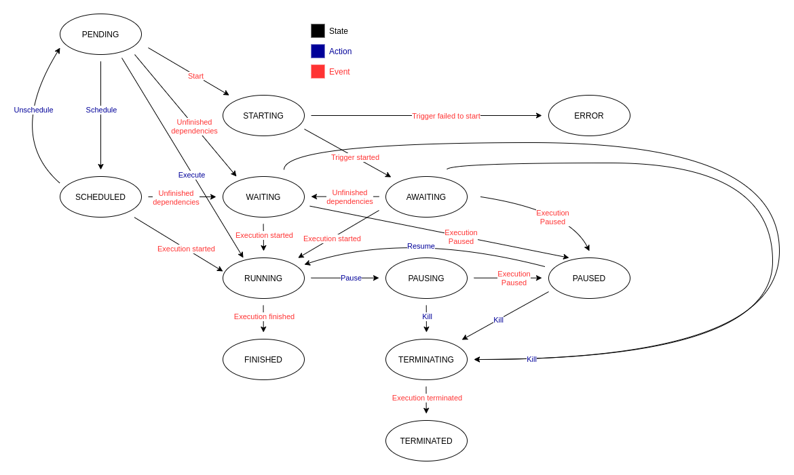

Execution statistics
There are special kinds of objects called Executions for every unit in the attack scenario:
- Plan execution
- Stage execution
- Step execution
These are not objects that need to be created by you - instead, they are created when their respective unit is executed. This way the history and results of each execution can be stored.
Every Execution object stores a start and finish time, so it is easy to count the running times of each unit. With Steps the Execution is also a place where the output and results from attack modules are stored.
Plan execution¶
For every execution of the Plan (on a given Worker) a new Plan execution is created.
The importance of this object is in keeping the history of executions of a given run. This object also connects all other sub-executions (Stage and Step) with the Run.
Parameters¶
The following table contains a list of output parameters.
| Name | Description | Type | Example |
|---|---|---|---|
| state | Current state of the execution. | string | PENDING |
| start_time | When the execution started. | datetime | 2022-07-21T20:37:28.343619Z |
| pause_time | Time of the last pause. | datetime | 2022-07-21T20:37:28.343619Z |
| finish_time | When the execution finished. | datetime | 2022-07-21T20:37:28.343619Z |
| schedule_time | When is the execution supposed to start. | datetime | 2022-07-21T20:37:28.343619Z |
| aps_job_id | ID of the job in scheduler. | string | abcd-1d2c-abcd-1d2c |
| run | Run of which it is a part of. | int | 1 |
| worker | Which Worker is used for the execution. | int | 1 |
| evidence_directory | In what directory is the evidence saved. | string | /path/to/evidence/directory |
States¶
Here is a map of allowed states, transitions, and their description.

PENDING - Every execution starts its lifecycle in this state - it is inactive.
SCHEDULED - Execution with this state will be started at the defined time.
RUNNING - Execution is in progress and its sub-executions are being executed.
PAUSING - If the user decides to pause the execution, it will change its state to PAUSING and wait until the conditions are met.
PAUSED - Once all the sub-executions are paused or in a final state, the execution is marked as PAUSED.
TERMINATING - If the user decides to kill the execution, it will change its state to TERMINATING and wait until the conditions are met.
TERMINATED - Once all the sub-executions are stopped, the execution is marked as TERMINATED.
FINISHED - In this state the execution, and its sub-executions have reached final states.
Stage execution¶
Stage execution contains execution data for its Stage counterpart.
Parameters¶
The following table contains a list of output parameters.
| Name | Description | Type | Example |
|---|---|---|---|
| state | Current state of the execution. | string | PENDING |
| start_time | When the execution started. | datetime | 2022-07-21T20:37:28.343619Z |
| pause_time | Time of the last pause. | datetime | 2022-07-21T20:37:28.343619Z |
| finish_time | When the execution finished. | datetime | 2022-07-21T20:37:28.343619Z |
| schedule_time | When is the execution supposed to start. | datetime | 2022-07-21T20:37:28.343619Z |
| aps_job_id | ID of the job in scheduler. | string | abcd-1d2c-abcd-1d2c |
| trigger_id | ID of the trigger on Worker. | string | abcd-1d2c-abcd-1d2c |
| plan_execution | Plan execution of which it is a part of. | int | 1 |
States¶
Here is a map of allowed states, transitions, and their description.

PENDING - Every execution starts its lifecycle in this state - it is inactive.
SCHEDULED - Execution with this state will be started at the defined time.
STARTING - Action that requires Worker confirmation is occurring - starting listener.
ERROR - An error occurred during execution start up - unable to start listener.
WAITING - Execution in this state is waiting for its dependencies (other executions) to finish.
AWAITING - Execution is awaiting a trigger activation.
RUNNING - Execution is in progress and its sub-executions are being executed.
PAUSING - If the user decides to pause the execution, it will change its state to PAUSING and wait until the conditions are met.
PAUSED - Once all the sub-executions are paused or in a final state, the execution is marked as PAUSED.
TERMINATING - If the user decides to kill the execution, it will change its state to TERMINATING and wait until the conditions are met.
TERMINATED - Once all the sub-executions are stopped, the execution is marked as TERMINATED.
FINISHED - In this state the execution, and its sub-executions have reached final states.
Step execution¶
Step execution contains execution data for its Step counterpart.
Parameters¶
The following table contains a list of output parameters.
| Name | Description | Type | Example |
|---|---|---|---|
| state | Current state of the execution. | string | PENDING |
| start_time | When the execution started. | datetime | 2022-07-21T20:37:28.343619Z |
| pause_time | Time of the last pause. | datetime | 2022-07-21T20:37:28.343619Z |
| finish_time | When the execution finished. | datetime | 2022-07-21T20:37:28.343619Z |
| result | Result of the module execution. | string | ok |
| output | Received output from the module execution. | string | created session with id 1. |
| serialized_output | Serializable output from the module execution. | dictionary | {"session_id": 1} |
| valid | Whether the parameters passed to the module are valid or not. | boolean | true |
| stage_execution | Stage execution of which it is a part of. | int | 1 |
States¶
Here is a map of allowed states, transitions, and their description.

PENDING - Every execution starts its lifecycle in this state - it is inactive.
STARTING - Action that requires Worker confirmation is occurring - starting the execution.
RUNNING - Module execution is in progress.
PAUSED - Execution is marked as PAUSED if its Stage execution is pausing and only if its about to be executed next.
TERMINATING - If the user decides to kill the execution, it will change its state to TERMINATING and wait until the conditions are met.
TERMINATED - Once the module execution is stopped, the execution is marked as TERMINATED.
FINISHED - In this state the execution has successfully FINISHED.
ERROR - An unexpected error occurred during the execution.
IGNORED - The conditions to start the execution weren't met.